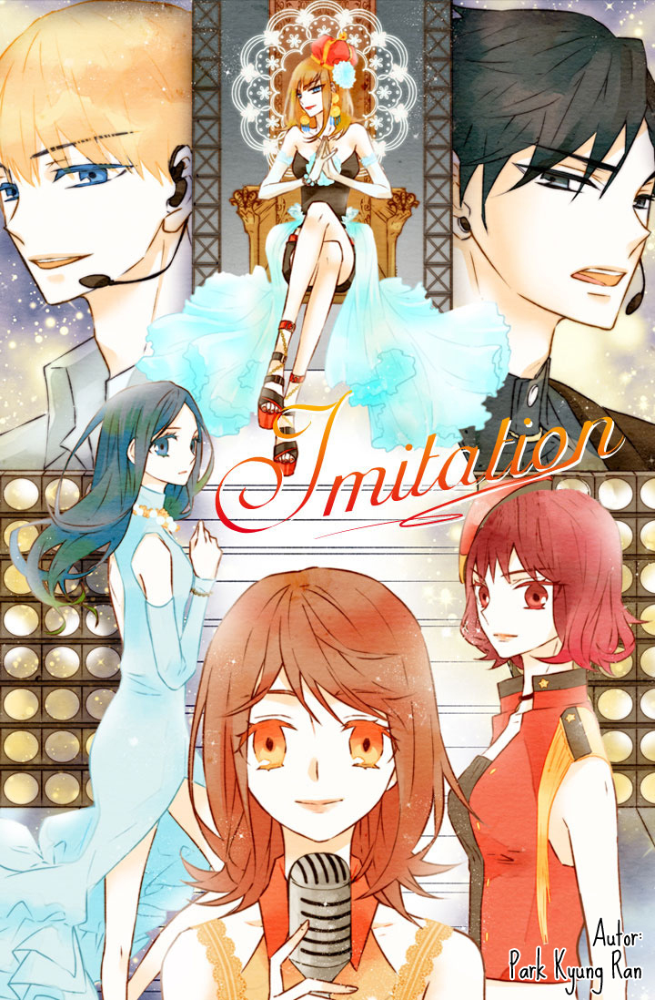

INFORMACIÓN
Titulo:
Imitation
Autor:
Park Hyung ran
Genero:
Romance, Drama, Musica
Maha es miembro del grupo de chicas, Tea Party. Ella se hizo famosa imitando a otras estrellas populares y por esta misma razón, Ryoc, un miembro de la banda de chicos, Tiburones, tiene un fuerte odio hacia ella. Sin embargo, a medida que continúan cruzándose, sus sentimientos hacia Maha comienzan a cambiar y su relación se convierte en un romance inesperadamente dulce que ahora deben esconderse de todos a su alrededor.